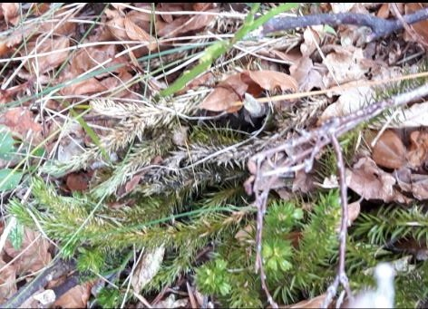
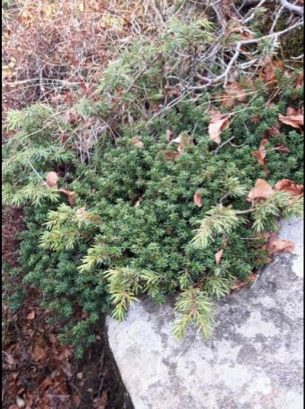

Licopodium clavatum
I licopodi sono delle piante perenni e sempreverdi con portamento strisciante. Sono parenti stretti delle felci, e quindi si riproducono con le spore. La durata della vita di questa pianta è di circa venti anni; il suo habitat tipico è costituito da pascoli e brughiere di mirtilli.

Empetrum hermaphroditum
Piccola pianta sempreverde con fusti bassi legnosi.
L'Empetrum è presente lungo tutto l'arco alpino e localmente sull’Appennino, entità rara. Cresce su creste e pendii, sulle rupi, ma anche in torbiere e ambienti palustri. I suoi frutti sono commestibili e in alcuni paesi vengono utilizzati per fare succhi e marmellate. Nella foto assieme al ginepro nano.